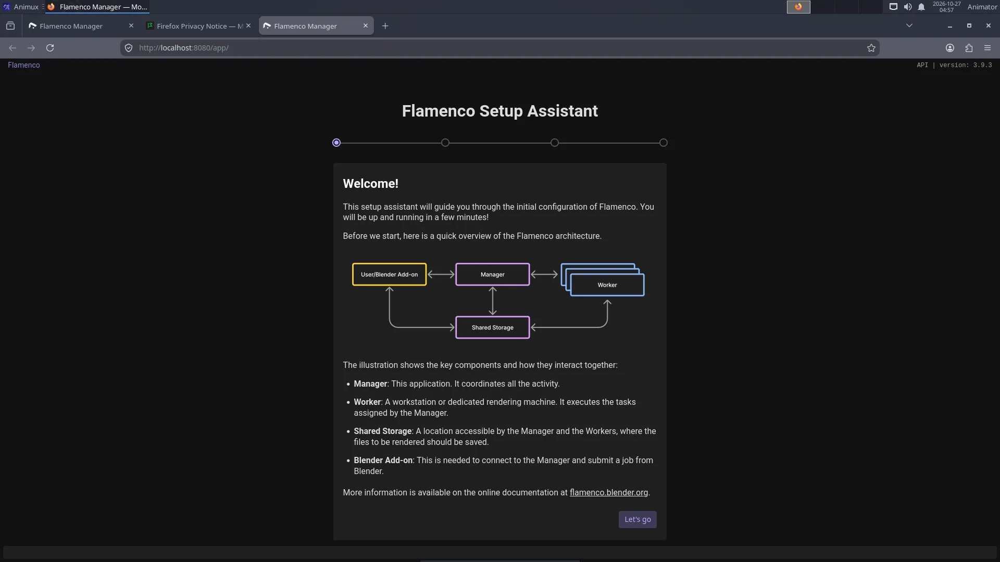

| Flamenco | |
|---|---|
| Menu | 3D Animation → Render Queue Managers → Flamenco Manager |
| Version | 3.9.3 |
| Command | animux-flamenco-manager |
| Good for | Intermediate |
| Files | Blender jobs |
| Licence | GPL-3.0 |
| Website | flamenco.blender.org |
| Self-test | animux-selftest flamenco |
A render farm is a group of computers that share the rendering of an animation: each computer renders different frames. Flamenco is Blender's official, free render farm software.
| Part | Runs on | Job |
|---|---|---|
| Manager | one computer (it can also render) | keeps the list of jobs and hands out frames; has a web page to watch progress |
| Worker | every computer that renders | asks the Manager for work, runs Blender, reports back |
| Blender add-on | the artist's computer | sends a .blend file to the Manager as a job |
| Shared storage | a network folder | all computers must see the project files and write the frames, at the same path |
1. Shared storage#
Every computer must reach the project at the same place, for example /mnt/farm. The simplest way on an all-Animux farm is NFS from the Manager computer.
On the Manager, first create the folder:
sudo mkdir -p /srv/farm
Only if the Manager runs from the USB stick (live session): the live system disk lives in memory, and NFS cannot share folders on it. Put the folder on a real disk or USB drive (mount it on /srv/farm), or, for a test, on a RAM disk of 8 GB:
sudo mount -t tmpfs -o size=8G tmpfs /srv/farm
(A RAM disk uses memory and is emptied when the Manager switches off, so copy the finished frames away.)
Then share it (change 192.168.1.0/24 to your own network):
sudo chown $USER /srv/farm
echo '/srv/farm 192.168.1.0/24(rw,sync,no_subtree_check,fsid=0)' | sudo tee -a /etc/exports
sudo systemctl unmask nfs-kernel-server && sudo systemctl enable --now nfs-kernel-server
sudo exportfs -ra && sudo exportfs -v
sudo ln -s /srv/farm /mnt/farm
sudo exportfs -v must list /srv/farm. fsid=0 makes /srv/farm the top of the share, so the Workers mount manager-pc:/ (this also works in a live session, where the plain path does not).
On each Worker (replace manager-pc with the Manager's name or IP address):
sudo mkdir -p /mnt/farm
sudo mount -t nfs manager-pc:/ /mnt/farm
A Windows share or NAS works too, as long as every computer uses the same path.
2. Start the Manager#
On the Manager computer: 3D Animation → Render Queue Managers → Flamenco Manager. A terminal window opens (keep it open; closing it stops the Manager) and the browser shows the setup page at http://localhost:8080/:


The setup asks for:
- Shared storage:
/mnt/farm. - Blender: choose Blender found on $PATH (
/usr/bin/blender, Blender 5.2.3).
Settings and the job database are kept in ~/flamenco. Without a desktop (text login), start the Manager with the same command the menu uses: animux-flamenco-manager, and open http://manager-pc:8080/ from another computer.
Only Animux r16 (_21): Workers get no work
Fixed in r16.1 (_25). On r16 the Manager accepts jobs, but no Worker ever starts them: the Manager tries to keep its task logs in /opt/animux/flamenco/flamenco-manager-storage, where it may not write (the web page shows the tasks as queued forever). Fix it once, after the setup page, in a terminal on the Manager:
sed -i "s#^local_manager_storage_path:.*#local_manager_storage_path: $HOME/flamenco/flamenco-manager-storage#" ~/flamenco/flamenco-manager.yaml
then close the Manager window and start it again. The package animux-flamenco 3.9.3-animux2 does this by itself.
3. Start the Workers#
On every render computer (including the Manager, if it should render too), open a terminal:
flamenco-worker
Workers find the Manager on the local network by themselves. If not, tell them where it is:
flamenco-worker -manager http://manager-pc:8080/
The Manager's web page lists them under Workers.
4. Send a job from Blender#
- On the artist's computer open
http://manager-pc:8080/in Firefox and download the Blender add-on from the Manager's web page (the link on the start page). - In Blender: Edit → Preferences → Add-ons → Install from Disk (in the menu at the top right of the add-ons list) → choose the downloaded
flamenco-addon.zip, and tick it. Enter the Manager URL and click Check. - Save your
.blendfile inside the shared storage (/mnt/farm/my-short/sh010.blend). - In Properties → Output → Flamenco, choose the job type Simple Blender Render, then Submit to Flamenco.
The frames appear in the shared storage as they are finished; watch progress on the web page.
Animux render farm roles#
The boot menu has two farm entries for computers started from the ISO:
| Entry | What Animux does |
|---|---|
| Render Farm Master | unmasks the NFS and DHCP server services, so the steps above work |
| Render Farm Slave | a render node |
Known problems in r16 (_21), fixed in r16.1 (_25)
- Both entries still start the desktop (with automatic login); they were meant to start to a text login. This does no harm: open a terminal and follow the steps above.
- Every computer started this way is called animux, so the Manager lists all Workers under the same name. Before starting
flamenco-workerfor the first time, give each computer its own name, for examplesudo hostnamectl set-hostname node1(the Worker registers under the computer name).
Both are fixed in r16.1 (_25, package animux-roles 1.0.19): text login and names like animux-slave-3f2a.
The DHCP server needs your own /etc/dhcp/dhcpd.conf before it is useful, and must not run on a network that already has a router handing out addresses.
Farmerjoe#
Farmerjoe is the small render farm from the original Animux, kept for old projects (/opt/farmerjoe, its README opens from the menu). Use Flamenco for new work.
Tips#
- All computers should run the same Blender version (all Animux r16 computers do).
- Use relative paths and File → External Data → Pack Resources or keep textures in the shared storage.
- Render to image sequences (PNG or EXR), never directly to a video file: a crashed frame can be re-rendered, and every Worker writes its own frames.
- Wired network (1 Gbit/s or faster) is much better than Wi-Fi.
- Documentation: https://flamenco.blender.org/usage/.
Coming: OpenCue#
Sony Pictures Imageworks and Google Cloud · open source since January 2019
OpenCue
Render manager for large studios · planned for Animux r17
OpenCue grew out of Cue 3, the queuing system Sony Pictures Imageworks developed in-house over 15 years and used on more than a hundred feature films and visual-effects projects. Google Cloud and Imageworks released it as open source (Apache 2.0) on 24 January 2019; it is now a project of the Academy Software Foundation.
Recent Imageworks projects ran it on over 150,000 processor cores, split between their own data centre and Google Cloud. Flamenco is the simpler choice for a class or a small studio; OpenCue is made for studios with many render nodes and many shows at once.
Sources: Google Cloud blog, "Introducing OpenCue: an open source render manager for media and entertainment", 24 January 2019 · TechCrunch, "Google partners with Sony Pictures Imageworks to launch an open-source VFX render manager", 24 January 2019